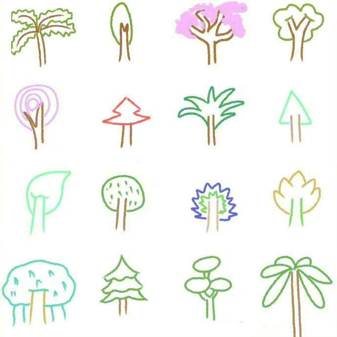
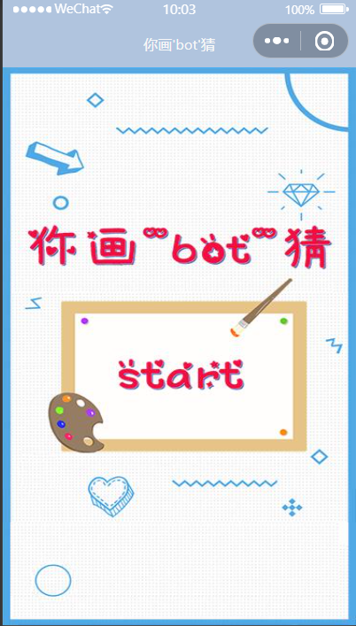
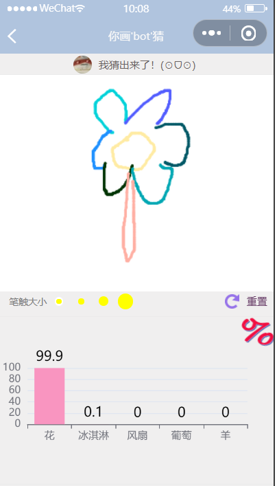
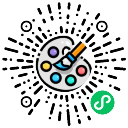

你画'bot'猜网页介绍
二.项目目的

"教育的最初目的其实是激发对事物的兴趣",所以我们希望通过 你画"bot"猜 小程序来帮助小孩子激发他们对于画画的兴趣,对于事物的探索,他们可以发挥自己的想象或者画画身边的事物,然后比对下最后"bot"识别的事物,可以用于早期教育,老师利用该小程序来帮助小孩子思考不同事物之间的区别的并引导他们通过画画来感受美好事物。
三.使用介绍
点击开始按钮进入画板页面------>选择你需要的笔触进行绘画------>等待人工智能的识别结果------>重置清空画板


四.效果展示
五.获取方法
在微信小程序开发者的人员配置输入体验着的微信号，体验者通过扫描生成的二维码就可以获得对应的游戏。下面是我们小程序的体验版二维码，可以通过联系开发者将微信号加入体验者设置中获得此款小程序的初体验(^o^)

体验版二维码